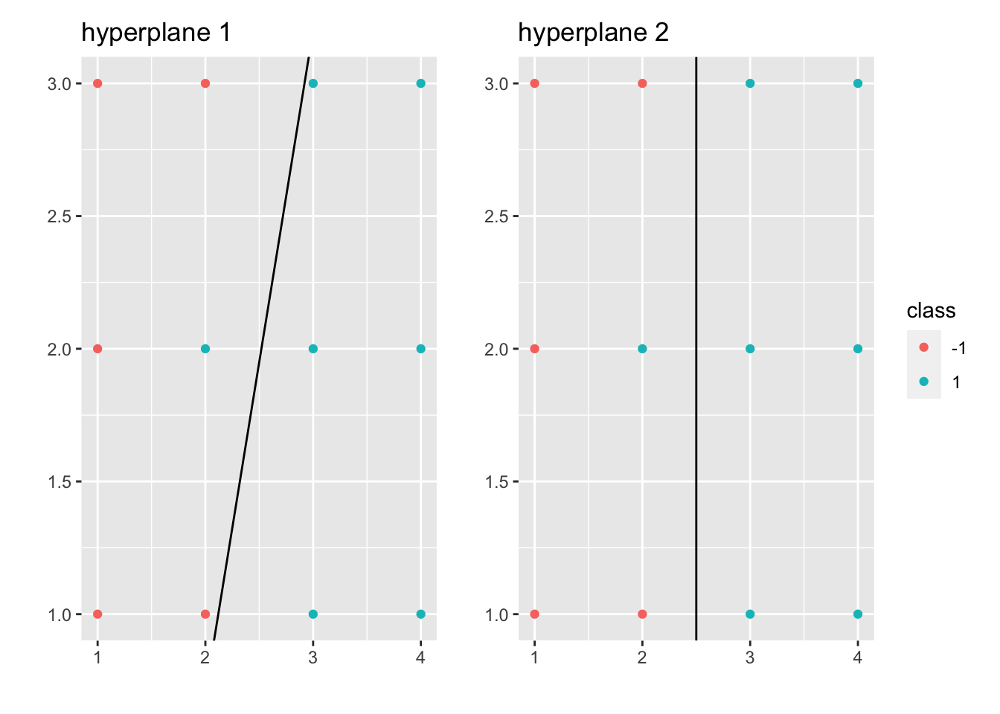
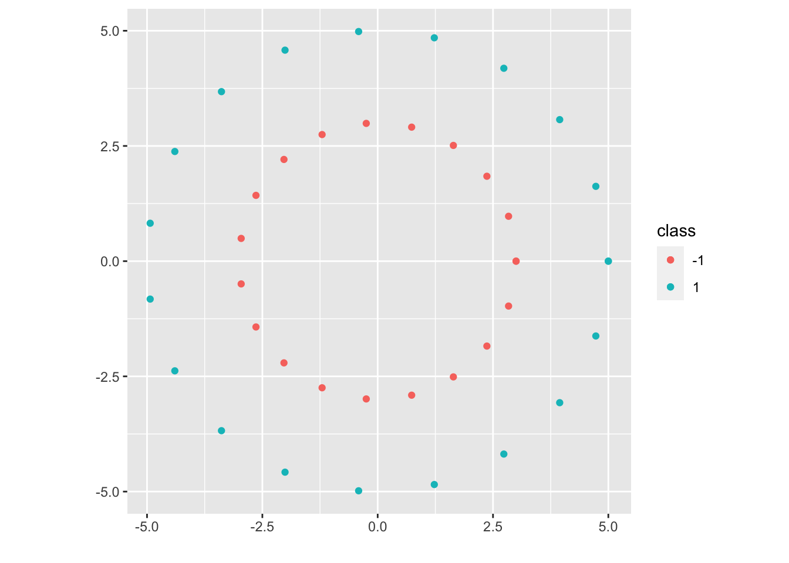

Chapter 6 Linear Classifiers
\(\mathcal F = \{\text{all linear classifiers}\}\), \(\mathcal X = R^d\), \(\mathcal Y = \{-1,1\}\) or \(\{1,\cdots,K\}\). Consider mainly on binary case.
Let \(\beta \in R^d\) and \(\beta_0 \in R\), \(\mathcal H_{\beta, \beta_0} = \{x\in R^d: <\beta, x> + \beta_0 = 0\}\) (hyperplane), \(\mathcal H^+_{\beta, \beta_0} = \{x\in R^d: <\beta, x> + \beta_0 \geq 0\}\) and \(\mathcal H^-_{\beta, \beta_0} = \{x\in R^d: <\beta, x> + \beta_0 < 0\}\) (half plane).
\[ \mathfrak f_{\beta, \beta_0}(x):=\begin{cases}1 & <\beta,x> + \beta_0 \geq 0 (\Leftrightarrow x \in H^+_{\beta,\beta_0})\\- 1& <\beta,x> + \beta_0 < 0(\Leftrightarrow x \in H^-_{\beta,\beta_0})\end{cases} \]
- Question: How to find a linear classifier based on \((x_i, y_i)\), \(i=1,\cdots,n\).
A: Three different ways to tune \(\beta, \beta_0\) from data: LDA (linear discriminant analysis) or QDA (quadratic discriminant analysis), Logistic Regression, Perceptrons and SVMs.
6.1 LDA or QDA
Let \(\mathcal Y = \{1, \cdots, K\}\), \((X,Y) \sim \rho\), where \(P(Y=k) = \omega_k, \rho_{X|Y}(X | Y=k) = N(\mu_k, \Sigma_k)\), we have:
\[ \begin{aligned} \mathfrak f_{Bayes}(x) &= \underset{k=1,\cdots, K}{\operatorname{argmax}} P(Y=k | X=x)\\ &= \underset{k=1,\cdots, K}{\operatorname{argmax}} \frac{\rho_{X|Y}(x | Y=k) \cdot \omega_k}{\rho_X(x)}\\ &= \underset{k=1,\cdots, K}{\operatorname{argmax}} [\rho_{X|Y}(x | Y=k) \cdot \omega_k]\\ &= \underset{k=1,\cdots, K}{\operatorname{argmax}} [log\Big (\rho_{X|Y}(x | Y=k)\Big ) + log(\omega_k)]\\ &= \underset{k=1,\cdots, K}{\operatorname{argmin}} [-log\Big (\frac{1}{(2\pi)^{d/2} (det(\Sigma_k))^{1/2}} \Big ) + \frac{1}{2} <\Sigma_k^{-1} (x-\mu_k), (x-\mu_k)> - log(\omega_k)]\\ &:= \underset{k=1,\cdots, K}{\operatorname{argmin}} \delta_k(x) \end{aligned} \]
Observation: \(\delta_k(x)\) is quadratic and convex in \(x\).
QDA: What if we only have \((x_i, y_i)\), \(i=1,\cdots,n\)? We use the observations to estimate \(\mu_k, \omega_k, \Sigma_k\), \(k=1,\cdots, K\).
Example 6.1 \[ \hat \mu_k := \frac{\sum_{i ~s.t. ~y_i=k} x_i}{\#\{x_i ~s.t. ~y_i=k\} ~(:= N_k)} \]
\[ (\hat \Sigma_k)_{lm} := (\frac{1}{N_k} \sum_{i ~s.t. ~y_i=k} x_{il}x_{im} - \hat \mu_{kl} \hat \mu_{km}), \text{ where } l=1,\cdots,d, ~m=1,\cdots,d. \]
\[ \hat \omega_k = \frac{N_k}{n} \]
\[ \hat \delta_k(x) \text{ same as } \delta_k \text{ but with } \hat{} \text{ everywhere} \]
LDA: What if we had assumed \(\Sigma_1 = \Sigma_2 = \cdots = \Sigma_K = \Sigma\)?
\[ \begin{aligned} \mathfrak f(x) &= \underset{k=1,\cdots, K}{\operatorname{argmin}} [\frac{1}{2} <\Sigma^{-1}x, x> + <\Sigma^{-1}x, \mu_k> + \frac{1}{2} <\Sigma^{-1}\mu_k, \mu_k> - log(\omega_k)]\\ &= \underset{k=1,\cdots, K}{\operatorname{argmin}} [<\Sigma^{-1}x, \mu_k> + \frac{1}{2} <\Sigma^{-1}\mu_k, \mu_k> - log(\omega_k)]\\ &:= \underset{k=1,\cdots, K}{\operatorname{argmin}} l_k(x), ~(l_k(x) \text{ is linear}) \end{aligned} \]
We can estimate \(\mu_k ,\omega_k\) by \(\hat \mu_k ,\hat \omega_k\), and \(\Sigma\) with the full data set.
6.2 Logistic Regression
Let \(\mathcal Y = \{1, \cdots, K\}\), \(\vec \beta_k \in R^d\), \(\beta_{0k} \in R\), and \((X,Y)\) satisfies: \(P(Y=k | X=x) = \frac{exp(<x,\vec \beta_k> + \beta_{0k})}{1 + \sum_{l=1}^{K-1} exp(<x,\vec \beta_l> + \beta_{0l})}\), \(P(Y=K | X=x) = \frac{1}{1 + \sum_{l=1}^{K-1} exp(<x,\vec \beta_l> + \beta_{0l})}\), where \(k=1,\cdots,K-1\). Let \(\varphi_k(x) := exp(<x,\vec \beta_k> + \beta_{0k})\) and \(\varphi_K(x):=1\), where \(k=1,\cdots,K-1\). Then we have:
\[ \begin{aligned} \mathfrak f_{Bayes} (x) &= \underset{k=1,\cdots, K}{\operatorname{argmax}} P(Y=k | X=x)\\ &= \underset{k=1,\cdots, K}{\operatorname{argmax}} \varphi_k(x)\\ &= \underset{k=1,\cdots, K}{\operatorname{argmax}} log(\varphi_k(x)) \end{aligned} \]
What if we only have observed \((x_i, y_i)\), \(i=1,\cdots,n\)? We use the observations to estimate the parameters.
Example 6.2 (MLE) Given the data, find the best parameters (the ones maximizing the likelihood of the observations), i.e.
\[ \{(\vec \beta_k^*, \beta_{0k}^*)\} = \underset{\{(\vec \beta_k, \beta_{0k})\}_{k=1,\cdots,K-1}}{\operatorname{max}} \prod_{i=1}^n P(Y = y_i | X = x_i) \]
6.3 Perceptrons and SVMs
Let \(\mathcal Y = \{-1, 1\}\), \((x_i, y_i)_{i=1,\cdots,n}\), \((\vec \beta, \beta_0)\), \(\mathfrak f_{\beta, \beta_0}(x):=\begin{cases}1 & <\beta,x> + \beta_0 \geq 0 (\Leftrightarrow x \in H^+_{\beta,\beta_0})\\- 1& <\beta,x> + \beta_0 < 0(\Leftrightarrow x \in H^-_{\beta,\beta_0})\end{cases}\), \(\sigma(\vec \beta, \beta_0) := \sum_{i \in \mathcal M_{\vec \beta, \beta_0}} dist(x_i, \mathcal H_{\vec \beta, \beta_0})\), where \(\mathcal M_{\vec \beta, \beta_0} = \{i \text{ s.t. } \mathfrak f_{\vec \beta, \beta_0} (x_i) \neq y_i\}\)
6.3.1 Perceptrons
Let \((\vec \beta^*, \beta_0^*) := \underset{(\vec \beta, \beta_{0})}{\operatorname{min}} \sigma(\vec \beta, \beta_0)\), then the perceptron classifier is \(\mathfrak f_{\vec \beta^*, \beta_0^*} (x)\). There exist many solutions of perceptron problems but some hyperplanes seem to be more robust:
Example 6.3 
Hyperplane 2 seems to be more robust.
6.3.2 Hard Margin SVM
Let’s suppose that \((x_i, y_i)_{i=1,\cdots,n}\) is linearly separable (for motivation for now). Then there exists at least one \(\vec \beta, \beta_0\) s.t. \(\mathcal M_{\vec \beta, \beta_0} = \emptyset\). What we want is to find
\[ \begin{aligned} \underset{(\vec \beta, \beta_{0})}{\operatorname{max}} &~margin(\vec \beta, \beta_0)\\ s.t. &~\mathcal M_{\vec \beta, \beta_0} = \emptyset \end{aligned} \]
where \(margin(\vec \beta, \beta_0):= min\{C^+_{\vec \beta, \beta_0}, C^-_{\vec \beta, \beta_0}\}\), \(C^+_{\vec \beta, \beta_0} = \underset{x_i \text{ s.t. } y_i = 1}{\operatorname{min}} dist(x_i, \mathcal H_{\vec \beta, \beta_0})\) and \(C^-_{\vec \beta, \beta_0} = \underset{x_i \text{ s.t. } y_i = -1}{\operatorname{min}} dist(x_i, \mathcal H_{\vec \beta, \beta_0})\).
Let \(\tilde \beta = \frac{\vec \beta}{|| \vec \beta ||}\), \(\tilde \beta_0 = \frac{\beta_0}{|| \vec \beta ||}\), where \(||\tilde \beta || = 1\). Then we have \(\mathcal H_{\tilde \beta, \tilde \beta_0} = \mathcal H_{\vec \beta, \beta_0}\), \(\mathcal H^+_{\tilde \beta, \tilde \beta_0} = \mathcal H^+_{\vec \beta, \beta_0}\), and \(\mathcal H^-_{\tilde \beta, \tilde \beta_0} = \mathcal H^-_{\vec \beta, \beta_0}\). Thus, the Geometric Formulation of SVM is:
\[ \begin{aligned} \underset{(\vec \beta, \beta_{0})}{\operatorname{max}} &~margin(\tilde \beta, \tilde \beta_0)\\ s.t. &~\mathcal M_{\tilde \beta, \tilde \beta_0} = \emptyset\\ &~||\tilde \beta|| = 1 \end{aligned} \]
As \(dist(x, \mathcal H_{\tilde \beta, \tilde \beta_0}) = | <x, \tilde \beta> + \tilde \beta_0|\), we have \(margin(\tilde \beta, \tilde \beta_0) = \underset{i=1.\cdots,n}{\operatorname{min}} | <x_i, \tilde \beta> + \tilde \beta_0|\).
As \(\mathcal M_{\tilde \beta, \tilde \beta_0} = \emptyset\), we have \(sign(<x_i, \tilde \beta> + \tilde \beta_0) = y_i\), \(\forall i=1, \cdots, n\).
Then, \(y_i (<x_i, \tilde \beta> + \tilde \beta_0) \geq 0\), \(\forall i=1,\cdots,n\).
Thus, \(| <x_i, \tilde \beta> + \tilde \beta_0| = y_i (<x_i, \tilde \beta> + \tilde \beta_0)\), \(\forall i=1, \cdots, n\).
As a result, the margin becomes:
\[ \begin{aligned} m &= \underset{i=1.\cdots,n}{\operatorname{min}} y_i(<x_i, \tilde \beta> + \tilde \beta_0)\\ &\qquad \qquad \Updownarrow\\ 1 &= \underset{i=1.\cdots,n}{\operatorname{min}} y_i(<x_i, \frac{\tilde \beta}{m}> + \frac{\tilde \beta_0}{m}) \end{aligned} \]
Let \(\beta = \frac{\tilde \beta}{m}\), \(\beta_0 = \frac{\tilde \beta_0}{m}\), then we also have \(1 \leq y_i(<x_i, \beta> + \beta_0)\), \(\forall i=1, \cdots, n\).
As \(|| \beta || = || \frac{\tilde \beta}{m} || = \frac{1}{m}\), we have \(m = \frac{1}{|| \beta ||}\).
Thus, the geometric formulation of SVM becomes:
\[ \begin{aligned} \underset{(\beta, \beta_{0})}{\operatorname{max}} &~\frac{1}{|| \beta ||}\\ s.t. &~y_i(<x_i, \beta> + \beta_0) \geq 1 ~\forall i=1,\cdots,n\\ &\qquad \qquad \Updownarrow\\ \underset{(\beta, \beta_{0})}{\operatorname{min}} &~|| \beta ||\\ s.t. &~y_i(<x_i, \beta> + \beta_0) \geq 1 ~\forall i=1,\cdots,n\\ &\qquad \qquad \Updownarrow\\ \underset{(\beta, \beta_{0})}{\operatorname{min}} &~|| \beta ||^2\\ s.t. &~y_i(<x_i, \beta> + \beta_0) \geq 1 ~\forall i=1,\cdots,n \end{aligned} \]
which is the Convex Optimization Formulation of SVM.
Remark.
SVM problem is fessible only when data set is linearly separable.
SVM problem is a convex optimization problem.
Duality for Convex Optimization:
Primal problem (P):
\[ \begin{aligned} \underset{z\in R^s}{\operatorname{min}} &~f(z)\\ s.t. &~h_i(z) \leq 0 \text{ (constraints) }~\forall i=1,\cdots,n \end{aligned} \]
We first introduce the notion of Lagrangian:
\[ \mathcal L(z, \lambda) = f(z) + \sum_{i=1}^n \lambda_i h_i(z) \]
where \(\lambda \in R^n\), \(n\) is the number of constraints and \(\lambda = (\lambda_1, \cdots, \lambda_n)\) is the vector of Lagrangian multipliers.
Let \(g(h) = \underset{z\in R^s}{\operatorname{min}} ~\mathcal L(z, \lambda)\), where \(\lambda\) is fixed, then we have the Dual Problem of (P) ((D)):
\[ \begin{aligned} \underset{\lambda}{\operatorname{max}} &~g(\lambda)\\ s.t. &~\lambda_i \geq 0 ~\forall i=1,\cdots,n \end{aligned} \]
Let’s suppose that \(f:R^s \to R\) and \(h_i:R^s \to R\) are all differentiable and convex functions. Then,
\[ \begin{aligned} \underset{\lambda \geq 0}{\operatorname{max}} g(\lambda) &= \underset{\lambda \geq 0}{\operatorname{max}} \underset{z\in R^s}{\operatorname{min}} \mathcal L(z,\lambda)\\ &= \underset{z\in R^s}{\operatorname{min}} \underset{\lambda \geq 0}{\operatorname{max}} \mathcal L(z,\lambda)\\ &= \underset{z\in R^s}{\operatorname{min}} f(z) ~(\text{suppose min and max can be swapped})\\ &\qquad s.t. ~h_i(z) \leq 0 ~\forall i=1,\cdots,n \end{aligned} \]
For the equation mentioned above:
\[ \underset{\lambda \geq 0}{\operatorname{max}} \mathcal L(z,\lambda) = \underset{\lambda \geq 0}{\operatorname{max}} f(z) + \sum_{i=1}^n \lambda_i h_i(z) = \begin{cases}\infty& \exists i, \text{ s.t. } ~h_i(z) > 0\\f(z) & \forall i, ~h_i(z) \leq 0\end{cases} \]
Theorem 6.1 (Karush-Kuhn-Tucker)
Suppose \(\exists \tilde z\), s.t. \(h_i(\tilde z) \leq 0\), \(\forall i=1,\cdots, n\) (Slatter’s condition)
Suppose \(f, h_i\) are differentiable and convex functions.
Then, \(\forall z^*\) solution to (P), \(\exists \lambda^*\) solution to (D), s.t.
\(\vec 0 ~(\in R^s) = \nabla f(z^*) + \sum_{i=1}^n \lambda_i^* \nabla h_i(z^*)\) (Stationarity)
\(h_i(z^*) \geq 0\), \(\forall i=1,\cdots,n\) (Primal Feasibility)
\(\lambda_i^* \geq 0\), \(\forall i=1,\cdots,n\) (Dual Feasibility)
\(\lambda_i^* h_i(z^*) = 0\), \(\forall i=1,\cdots,n\) (Complementary Slackness)
Conversely, if \((z^*, \lambda^*)\) satisfy 1-4, then \(z^*\) is a solution to (P) and \(\lambda^*\) is a solution to (D).
Back to SVM problem:
\[ \begin{aligned} \underset{(\beta, \beta_{0})}{\operatorname{min}} &~\frac{|| \beta ||^2}{2}\\ s.t. &~y_i(<x_i, \beta> + \beta_0) \geq 1 ~\forall i=1,\cdots,n \end{aligned} \]
Let \(z = (\beta, \beta_0)\), \(f(z) = \frac{|| \beta ||^2}{2}\), \(h_i(z) = 1 - y_i(<x_i, \beta> + \beta_0)\).
Then we have \(\mathcal L(\beta, \beta_0, \lambda) = \frac{|| \beta ||^2}{2} + \sum_{i=1}^n \lambda_i \Big(1 - y_i(<x_i, \beta> + \beta_0)\Big)\) and \(g(\lambda) = \underset{(\beta, \beta_{0})}{\operatorname{min}} \{\frac{|| \beta ||^2}{2} + \sum_{i=1}^n \lambda_i \Big(1 - y_i(<x_i, \beta> + \beta_0)\Big)\}\)
Case 1: If \(\sum_{i=1}^n \lambda_iy_i \neq 0\), \(g(\lambda) = -\infty\)
Case 2: If \(\sum_{i=1}^n \lambda_iy_i = 0\), \(g(\lambda) = \underset{\beta}{\operatorname{min}} \{\frac{|| \beta ||^2}{2} + \sum_{i=1}^n \lambda_i \Big(1 - y_i(<x_i, \beta>)\Big)\}\).
To find this, we can find the critical point for the above problem: \(\vec 0 = \beta - \sum_{i=1}^n \lambda_i y_i x_i\). Thus, plug the \(\beta\) back to the above expression, we have: \(g(\lambda) = -\frac{1}{2} \sum_{i=1}^n \sum_{j=1}^n \lambda_i \lambda_j y_i y_j <x_i, x_j> + \sum_{i=1}^n \lambda_i\).
As a result, we have the Dual of SVM (D):
\[ \begin{aligned} \underset{\lambda \geq 0}{\operatorname{max}} g(\lambda) &= \underset{\lambda \in R^n}{\operatorname{max}} \{-\frac{1}{2} \sum_{i=1}^n \sum_{j=1}^n \lambda_i \lambda_j y_i y_j <x_i, x_j> + \sum_{i=1}^n \lambda_i \}\\ &\qquad s.t. ~ \begin{cases}\sum_{i=1}^n \lambda_iy_i = 0\\ \lambda_i \geq 0 \end{cases}~\forall i=1,\cdots,n \end{aligned} \]
Now, using KKT conditions: let \(\lambda^*\) be a solution to (D). From the (Stationarity), we have \(\beta^* = \sum_{i=1}^n \lambda_i^* y_i x_i\). From the (Complementary Slackness), we have
\[ \begin{aligned} &\lambda_i^*\Big(1-y_i(<x_i, \beta^*> + \beta_0^*)\Big) = 0, ~\forall i\\ \underset{\text{choose } \hat{i} \text{ s.t. } \lambda^*_{\hat{i}} > 0}{\Rightarrow} &~ 1 - y_{\hat i} (<x_{\hat i}, \beta^*> + \beta_0^*) = 0\\ \Rightarrow &~ 1 = y_{\hat i} (<x_{\hat i}, \beta^*> + \beta_0^*)\\ \underset{y_i^2=1}{\Rightarrow} &~ y_{\hat i} = (<x_{\hat i}, \beta^*> + \beta_0^*)\\ \Rightarrow &~ (y_{\hat i} - <x_{\hat i}, \beta^*>) = \beta_0^* \end{aligned} \]
Then, we go from \(\lambda^*\) to \((\beta^*, \beta_0^*)\) or (D) to (P):
\[ \begin{aligned} \beta^* &= \sum_{i=1}^n \lambda_i^* y_i x_i\\ \beta_0^* &= y_{\hat i} - <x_{\hat i}, \beta^*>\\ &= y_{\hat i} - \sum_{j=1}^n \lambda_j^* y_j <x_j, x_{\hat i}>, \text{ where } \hat{i} \text{ s.t. } \lambda^*_{\hat{i}} > 0 \end{aligned} \]
One can show that the primal problem (P) has a unique solution as shown above (Use strictly convex to show uniqueness for \(\beta^*\)).
Thus the classifier is:
\[ \begin{aligned} l(x)&= \begin{cases} 1 & <\beta^*, x> + \beta_0^* > 0\\ -1 & <\beta^*, x> + \beta_0^* < 0 \end{cases}\\ &= \begin{cases} 1 & \sum_{j=1}^n \lambda_j^* y_j (<x_j, x> - <x_j, x_i>) + y_i > 0\\ -1 & o.w. \end{cases}, \text{ where }i \text{ s.t. } \lambda_i^*>0\\ \end{aligned} \]
which depends on \(x\) and \(x_i\) only through inner products. This is a crucial property that we will exploit to define a larger class of SVM classifiers.
Remark.
Hard Margin SVM problem has a solution (primal problem is feasible) if data is linearly separable .
In KKT, primal problem is feasible iff dual problem is bounded (in which case both primal and dual have solution and it makes sense to talk about \(z^*\) and \(\lambda^*\)).
Definition 6.1 (Support Vectors) Under the assumptions, let \(\beta^*, \beta_0^*, \lambda^*\) be the solution to (P). We say \(x_i\) is a support vector if \(y_i (<x_i, \beta^*> + \beta_0^*) = 1\).
In particular, the minimum distance between \(\{x_1, \cdots, x_n\}\) and the optimal hyperplane \(\mathcal H_{\beta^*, \beta_0^*}\) is achieved at the support vectors.
Theorem 6.2 (Stability Property of SVMs) Let \(x_i\) be a training data point and not a support vector. Suppose \(x_i\) is changed for a point \(\tilde x_i\) s.t. \(y_i (<x_i, \beta^*> + \beta_0^*) \geq 1\). Then the solution for the new data set is the same for the original data set.
Proof. \((\lambda^*, \beta_0^*, \beta^*)\) from the original problem still satisfy KKT condition for new data set:
(Stationarity) As \(x_i\) is not a support vector, we have \(\lambda^*_i = 0\). Thus, \(\beta^* = \sum_{j=1}^n \lambda_j^* y_j x_j = \sum_{j \neq i} \lambda_j^* y_j x_j + \lambda_i^* y_i x_i = \sum_{j \neq i} \lambda_j^* y_j x_j + \lambda_i^* y_i \tilde x_i\), which means that \(\beta^*\) doesn’t change.
(Primal Feasibility) \(y_j (<\beta^*, x_j> + \beta_0^*) \geq 1\), \(\forall j \neq i\) and \(y_i (<\beta^*, x_j> + \beta_0^*) \geq 1\) by the assumption above.
(Dual Feasibility) \(\lambda_j \geq 0\), \(\forall j\).
(Complementary Slackness) As \(\lambda_i^* = 0\), \(\lambda_i^* (1-y_i(<\tilde x_i, \beta^*> + \beta_0^*)) = 0\).
As we didn’t change any \(y_i\), we still have \(\sum_{j=1}^n \lambda_i^* y_i = 0\). As a result, \((\beta_0^*, \beta^*)\) is still a solution for the primal problem for the new data set.
Remark. The robustness associated to SVMs is markedly different to what happens with LDA or Logistic Regression, where outliers can change completely the decision boundaries. It depends only on support vectors.
6.3.3 Soft Margin SVM
What if the data set is not linearly separable?
- Case 1:

The data set is not linearly separable mildly. This case will motivate the soft margin SVM (generalizes Hard Margin SVM).
- Case 2:

The data set is not linearly separable but by a lot. After a transformation, we will be able to transform the data into a linearly separable data set.
- Case 3:

Use the kernelized version of Soft Margin SVM.